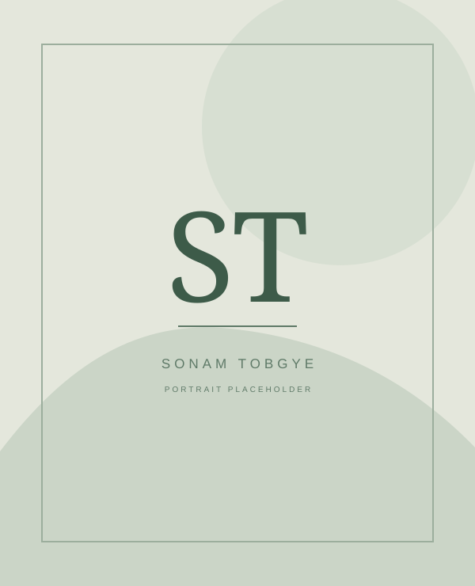

Sonam
Tobgye.
Lecturer at Kaplan Business School
Melbourne, Australia
I work at the intersection of applied economics, quantitative analysis, education and evidence-informed policy, with research spanning economic inequality, health, energy and fiscal resilience.

01 / ABOUT
Research with real-world relevance.
I am a Melbourne-based lecturer, applied economist and policy analyst. My work brings together empirical research, advanced quantitative methods and practical learning to address questions of economic and social significance.
I hold a PhD in Economics from RMIT University (2024), an MPhil in Economics from Monash University (2020), and an MA in International and Development Economics from HTW Berlin (2013).
Before my academic career, I held senior research, policy and public-sector audit roles in Bhutan. This experience continues to shape my interest in producing evidence that supports better decisions.
02 / TEACHING
Teaching & learning.
Applied, inclusive and data-informed education.
Practice-based learning · technology-enabled delivery · inclusive support · authentic assessment and feedback
03 / RESEARCH
Publications & working papers.
Journal publications, submitted manuscripts and policy reports.
Published journal article
Revise & resubmit
Under review / with editor / submitted
Government policy reports
Editorial statuses reflect the supplied CV (15 November 2026) and may change. Journal rankings are omitted from the public list pending independent verification against the relevant annual lists. A manuscript under consideration is not a published article.
04 / BACKGROUND